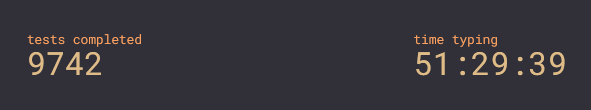
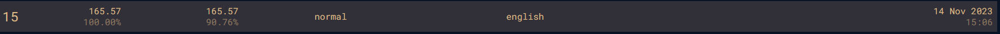
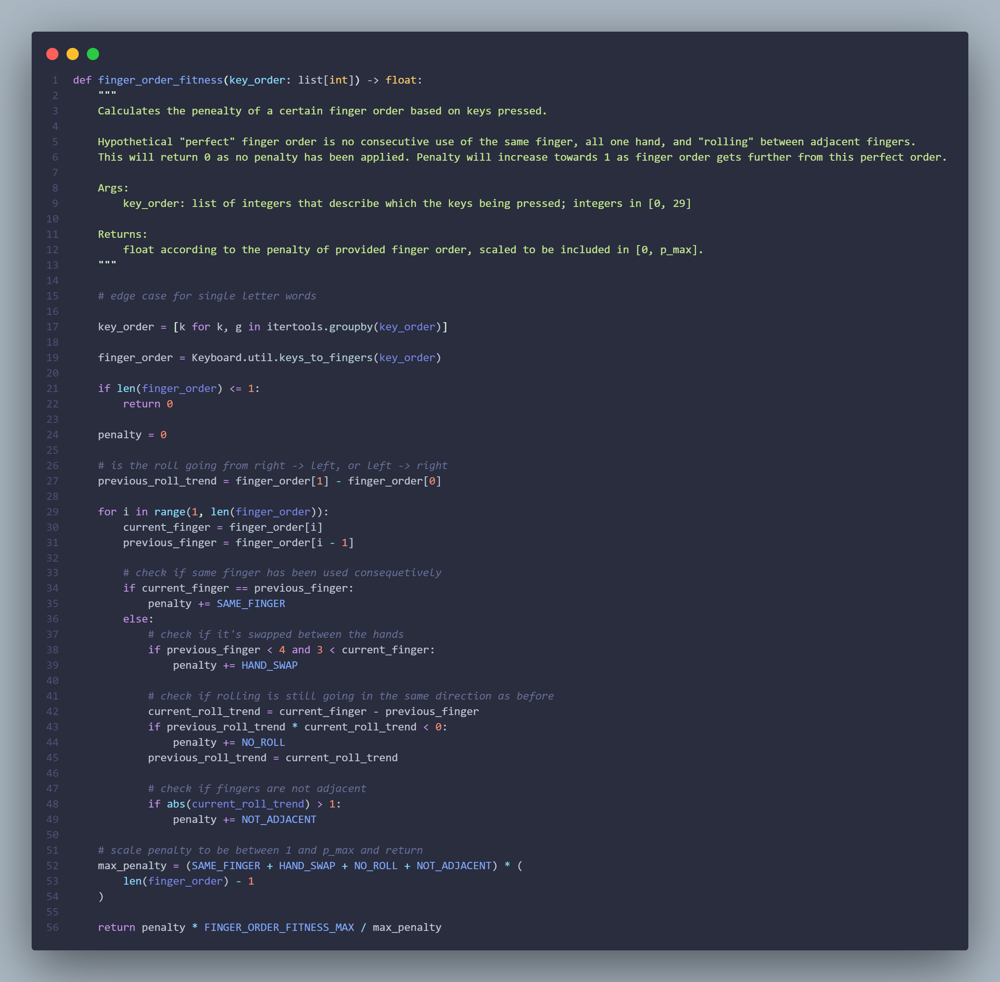
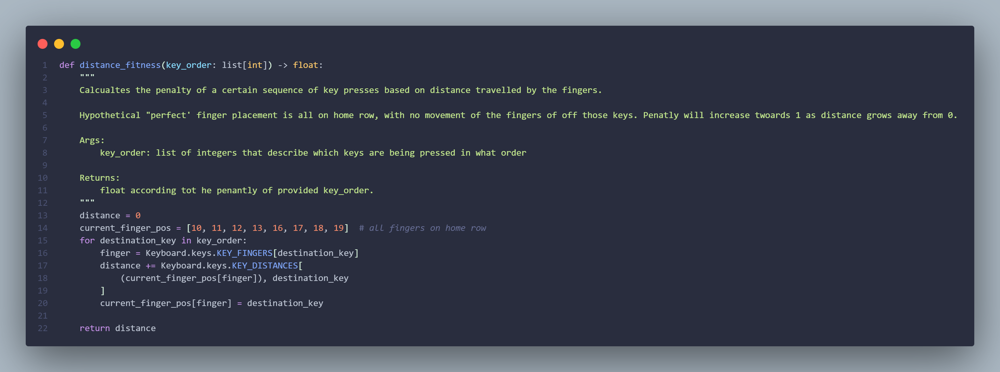

A little context
I've spent a lot of time speed typing. I'm not sure whether you could consider it a soft skill, but it's a cool party trick nonetheless. I have some pretty decent top speeds, at least compared to the human average. I've also spent some time learning Dvorak, a different keyboard layout specifically designed to be a rival to the overwhelmingly more common QWERTY. Given all this, I feel as though I'm at least a little qualified to talk about the positives and negatives of any one typing experience.
 As evidenced by the people at the top of the leaderboards, the QWERTY layout is more than ample for speed, perhaps contrary to its design (if you believe the supposedly true story of it's origin) but in my opinion I think that's more a testament to the adaptability of human hands and brain. It has plenty of downfalls that people have attempted to rectify in alternative layouts.
The main complaint is as follows:
- The most frequentyly used keys are scattered about the keyboard, such that your fingers have to frequently move from the home row, sometimes by quite a distance, to reach them. This is meant to be make it inefficient, and some have said even potentially damaging to your hands.
But I might append some more to that short list, based on my experience:
- The keys are distributed without any thought to which keys are used sequentially, in the sense that one key commonly follows the other. For example, it makes sense that you'd want letters like "e" and "r", or "t" and "h", to be related in terms of where they are in the layout.
- The "experience" of typing is sometimes a little clumsy. By this I mean that some words "roll" off your fingers at speed, whereas a majority might seem clunky and slow in comparison (subject to your individual typing style, of course) like those that only use one hand or rely on the same finger a lot. The word "change", uses your right index finger for 3/5ths of the word.
My argument therefor, is that there must be a better alternative to QWERTY, one that hasn't yet been designed. A layout that takes everything into account: Distance traveled by your fingers, the relationship between certian letters, and the amount of words that you can let roll of the hand.
Leveraging Evoluation
I did a little research and found that someone had beaten me to it but that they'd only taken into account the "distance travelled" metric - in my opinion, the least important of the aforementioned metrics. I also thought that his crossover method to be overly destructive: by copying a whole half of one parent, and effectively randomly filling in the other half from the other parent, he was losing a lot of information from both layouts, and not effectively combining the two parents as the genetic algorithm would have you do.
The genetic approach however was arguably an appropriate one. 28! (number of permutations of a keyboard layout) is a lot to evaluate one by one, and far less fun than the genetic approach. So, I would design my own genetic algorithm with it's own crossover and mutation methods, as well as it's own metrics that I would tune to create my own intepretation of the "perfect" keyboard layout.
To backtrack a little, a genetic algorithm mimics biological evolution. If you take two well adapted parents, and examine their offspring, you will likely find that their offspring is similarly well adapated with regards to one or more metrics under the notion that they wil have inherited favorable traits from one or both of their parents. The inverse obviuosly also applies here. Their offspring also have the chance to have mutated a little.
Crossover
In my implementation, crossover between two parents goes as follows:
- Take two parents and a "crossover rate" (a real number between 0 and 1 exclusive)
- Randomly take some "genes" from layout A, in this the location of letters in A's layout. The higher the crossover rate the more genes you're likely to take from A to pass on to the offspring.
- Let B fill in the remaining empty keys.
- In the case where a letter is still missing from the offspring, consider the location of the letter in B and find the closest open key.
I chose this implementation because it keeps deliberately aims to maintain the location of keys from parent to offspring, with a bias towards/away from one parent.
Mutation
Mutiation with regards to a layout is also fairly simple. Taking a layout and a mutation rate, as well as a mutation "distance":
- According to the mutation rate, chose a random key on the layout to mutate
- Find all the keys withing range of the mutation according to the aforementioned mutation "distance", and swap them.
Evaluation
When evaluting whether a layout was any good, I used 2 metrics:
- A fancy metric that penalises use of the same finger successively (as this is horribly ineffecient compared to using multiple fingers), not "rolling" between fingers (using your index, middle, ring, and pinky in that order), not using adjacent fingers (going from left pinky to right pinky), and swaping between your hands in the middle of a word. 
- Distance accumulated by your fingers moving from key to key 
I implemented these metrics in such a way that I could change how much I wanted each metric to influence the result. For example, swapping between your hands in the middle of a world is far less detrimental than using your index finger for 3 letters in a single world, so it should infleunce the metric far less.
For something to score all this on, word frequency is super important. A layout is utterly useless if it's lovely to type on for words you'd only type once in a blue moon - the most frequenty english words are the most important. With this in mind, the context of the langauge also influences the frequency of the words used (scientific journals will has a very different frequency distribution to childrens books). I used a nice average distribution that I feel represents english from the Google Book Corpus. Nice regular english thats fairly representitive of the primary use of a keybaord